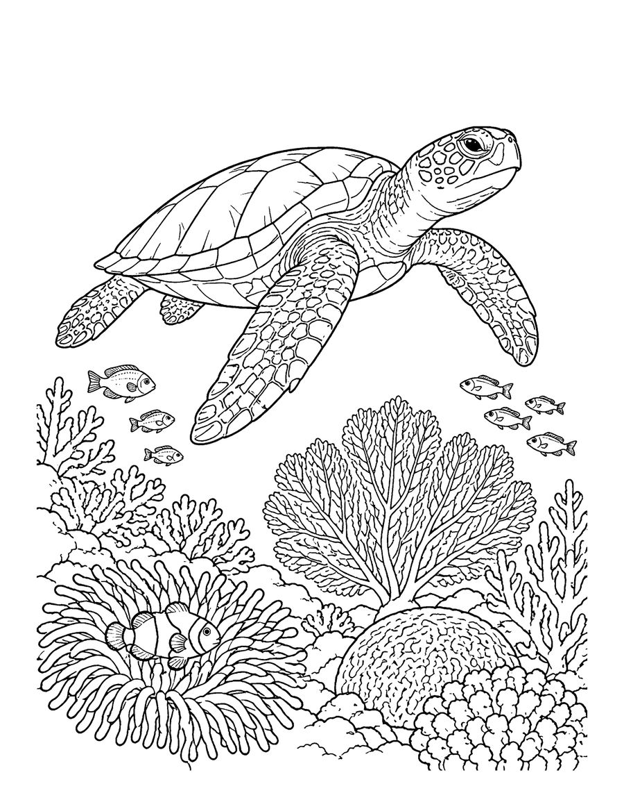
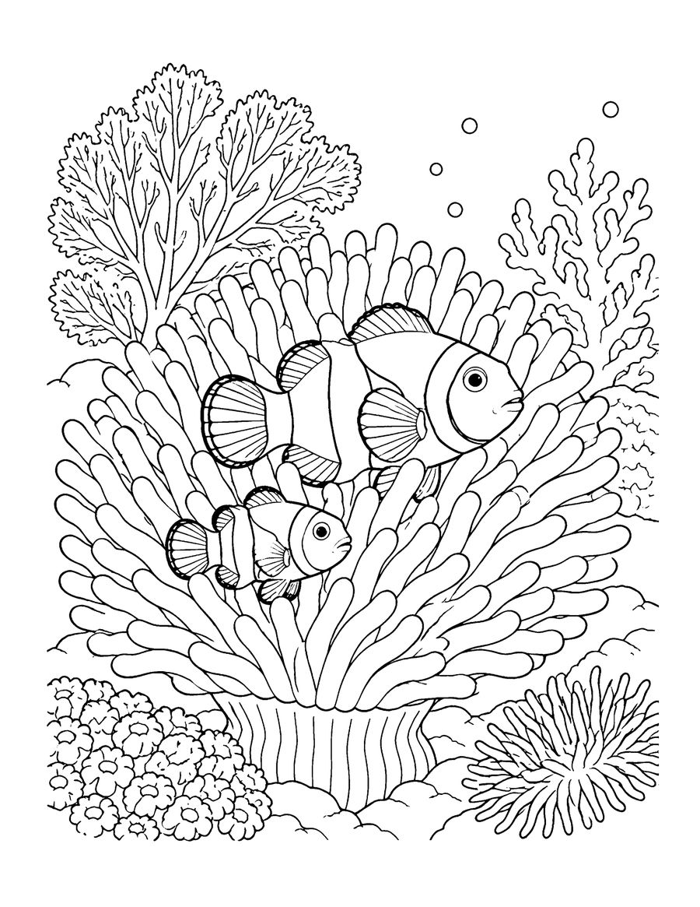
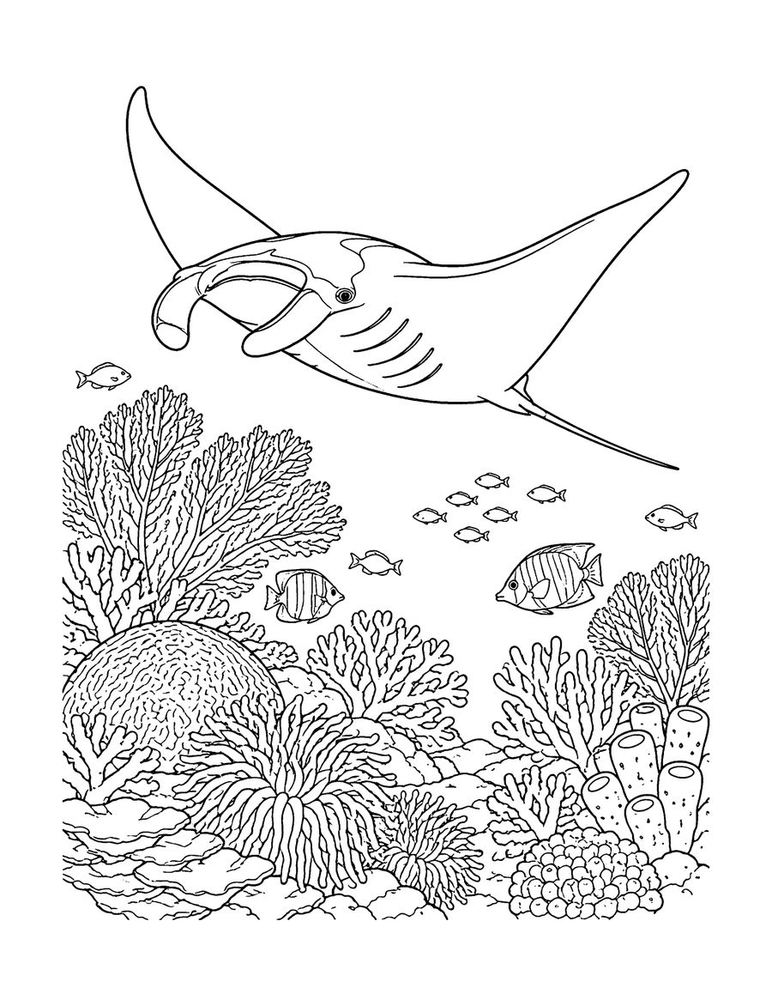

Dive into three free coral reef coloring pages made for teens and adults: a green sea turtle gliding over the reef, a pair of clownfish in an anemone and a manta ray soaring above the corals. They come from Coral Reef Wonders, a relaxing ocean coloring book with realistic sea life and plenty of detail to shade.
Coral reefs cover only a small part of the ocean floor, yet they are home to a large share of all marine species, which is why artists and divers love to draw them. Clownfish shelter among the tentacles of sea anemones, and manta rays are gentle filter feeders. Use blues, teals and warm corals for a classic look, or try an unexpected palette for a dreamy underwater scene. Fine-tip markers, colored pencils and gel pens work well. Print on US Letter paper at 100% scale, and use heavier paper if you plan to blend. The complete book includes 40 reef animals, including seahorses, octopus and a busy reef scene.
Your 3 free coloring pages

Clownfish in an Anemone
Download free page (PDF)
Manta Ray
Download free page (PDF)Printing tips
- Print at 100% scale on US Letter (8.5 x 11 in) paper. For A4, choose “Fit to page”.
- Use heavier paper (65 lb / 120 gsm or more) if you color with markers, so ink does not bleed through.
- Download the PDF first, then print from your PDF viewer for the sharpest lines.
Get all 40 pages
These 3 pages are a taste of Coral Reef Wonders (Teens & adults). The full coloring book has 40 pages, ready to print or color in a book.
More free coloring pages

Free Whale and Sea Otter Coloring Pages
All ages

Free Dolphin Coloring Pages for Kids
Kids 6-12

Free Arctic Animals Coloring Pages
Teens & adults

Free Mandala Animal Coloring Pages
Teens & adults